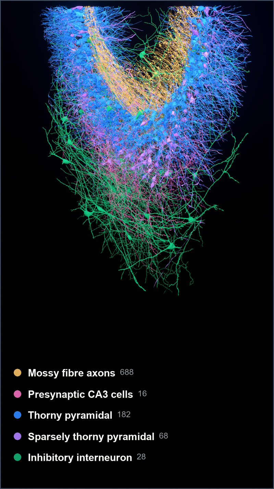
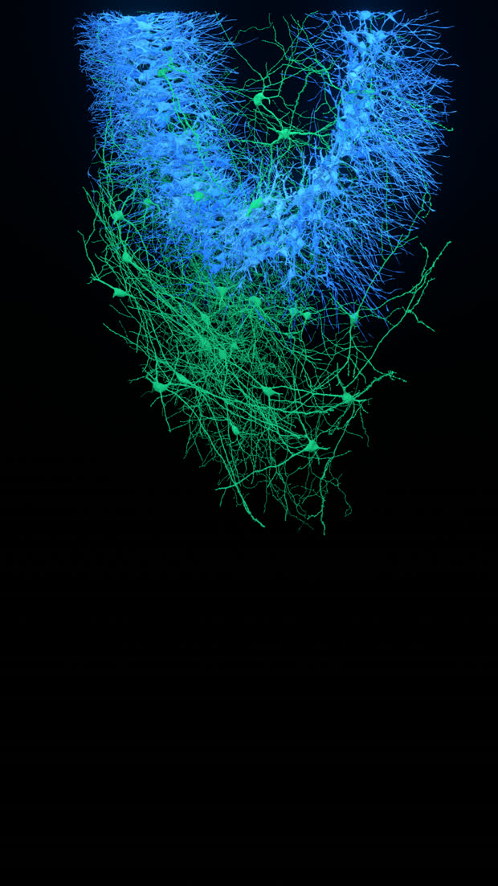

CA3 renderings
3D renderings from a connectomic reconstruction of mouse hippocampal CA3.

What the study found
The hippocampus is where experience becomes memory, and CA3 is the part that binds the pieces of an event together. To understand how, you need to know not just which cells are present but exactly which ones talk to each other.
This study took a block of mouse CA3, imaged it with an electron microscope, and traced every neuron and every connection inside it. The result is a complete wiring diagram of a small piece of real brain: 1,815 pyramidal cells, the main excitatory neurons, 229 inhibitory cells, and more than 55,000 mossy fibers, the axons carrying signals in from the neighbouring dentate gyrus.
Not all pyramidal cells are alike
Some are covered in elaborate spiny structures called thorny excrescences, and these cells receive many mossy fiber inputs. Others, the sparsely thorny cells, receive almost none. The split is sharp rather than gradual, so these are genuinely two kinds of cell rather than two ends of one continuum.
Input is unevenly spread across space
Cells further along the region receive substantially more mossy fiber contacts than cells nearer the beginning. Cells sharing the same incoming fibers also sit closer together than chance would predict, suggesting the wiring is organised rather than arbitrary. Curiously, the cells receiving the most inputs get them through smaller terminals holding fewer vesicles, so more connections does not simply mean more of everything.
Inhibition is targeted, not general
Mossy fibers also drive inhibitory neurons, which act as brakes on the circuit. But they drive only the inhibitory neurons that go on to target thorny cells. Those serving sparsely thorny cells receive no mossy fiber input at all. So the same signal that excites one type of cell also recruits the brake belonging specifically to that type, leaving the other type untouched.
Two populations, different territory

Thorny pyramidal cells alone

Every synapse these cells make

The classification, reproduced
The study separates thorny from sparsely thorny cells by mossy fiber convergence, drawing the line at more than 10 inputs. That split reproduces cleanly in this subset.
| population | with MF input | median inputs | above 10 |
|---|---|---|---|
| Thorny pyramidal | 94 / 182 | 22 | 71% |
| Sparsely thorny | 8 / 68 | 1 | 0% |
| Inhibitory | 9 / 28 | 2 | 22% |
Colour key